CorWav IDL Library Documentation
Contents:
1. What is CorWav?
CorWav is a library of Interactive Data Language (IDL) tools for the manipulation and analysis of
large-scale waves (and related phenomena) in the solar corona ("CorWav" comes from "coronal waves").
It has been designed for use with the SolarSoft
IDL package of solar and heliospheric physics tools, so make sure to have that installed.
CorWav is freely available, and can be downloaded/forked from GitHub (Git
help is here). The main suite of tools was designed to analyze EUV wave
observations from the
Atmospheric Imaging Assembly (AIA) on the Solar Dynamics Observatory (SDO) mission.
However, the code has been written with flexibility and modularity in mind, so it may be easily
modified to incorporate new types of data or data-driven models.
Top
2. What tools does CorWav include?
CorWav includes tools to analyze the radial and lateral kinematics of coronal bright fronts/EUV waves,
as well as their other properties: wave sheath thickness, density and temperature change,
their interaction with the coronal magnetic field (shock-to-magnetic-field angles, heliospheric connectivity).
The framework includes tools for making various kinds of images and movies from AIA data, as well as for plotting
images and data from other instruments.
Top
3. Setting up your local copy of CorWav.
You can download your local copy of CorWav from here,
or by running the following in your
command line terminal (assuming you have git installed):
$> git clone https://github.com/kkozarev/coronalwaves corwav
This will download a copy of the code into the local folder 'corwav'.
After this, there are several steps to take in order to ensure you can access the procedures and run them properly.
First, you need to add some global variables to your linux/unix-like environment. Luckily,
there's a script that can do that for you. Open the file set_paths.sh in gen/ directory of the code folder -
you should see several variables like this near the top:
#set CORWAV to the directory where analyzed events will be stored
CORWAV="/Volumes/Backscratch/Users/kkozarev/corwav/"
#set CORWAV_DATA to the directory where the local copy of data will live
CORWAV_DATA="/Volumes/Itch/Users/kkozarev/corwav/"
#set CORWAV_TRUNK to the directory of the CorWav code (or local copy of the repository)
CORWAV_TRUNK="${HOME}/git/corwav/"
#set CORWAV_WEB to directory where the web database page is.
CORWAV_WEB="/var/www/personal/kkozarev/public_html/"
Edit these to point to the code location (CORWAV_TRUNK), archived local data (CORWAV_DATA), the directory where analyzed data will live (CORWAV),
and (optionally) the web database directory (CORWAV_WEB). Save and execute the script.
Top
4. Creating and loading an event.
An 'event' is a structure containing the necessary information that CorWav tools use to load and process coronal wave and
related data, for a given solar eruption event. This information is instrument-independent. CorWav provides a human-readable,
easy to use
JSON format for loading event data into IDL. Here is an example of the
input format for a single event:
{
"label": "110511_01",
"coordX": 785,
"coordY": 399,
"st": "2011/05/11 02:10:00",
"et": "2011/05/11 02:40:00",
"aiafov": [1024,2048],
"flareclass": "B8.1",
"typeII": true,
"loop": true,
"filament": true,
"comment": "Huge shock wave originates inside the limb, with clear lateral expansion.",
"web": false,
"rstn_lookup": "http://www.ips.gov.au/Category/World%20Data%20Centre/.../20110511spectrograph.gif",
"callisto_lookup": "",
"nrh_lookup": ""
}
The JSON format has elements (such as "label"), which have certain values (such as "110511_01"), assigned with the ':' character.
The elements are separated by commas.
Text values must be surrounded in quotation marks, unlike numbers. The format also accepts an array of values
(such as "aiafov": [1024,2048]),
or boolean values (such as "filament": true).
Every instance of the structure format is surrounded by curly brackets. White space is unimportant for the JSON format, but it is very
important for readable code.
Let's look at the elements in the event structure. The first one,
{"label": "110511_01"}
is the unique label of the event. Its format is YYMMDD_NN, where YYMMDD is the date, and NN is the consecutive number of this event
in the database for that date.
Thus, "110511_01" is the first event of 11 May, 2011 in the event database. The event label is very important, since it is used to
uniquely identify an event, along with all its information.
{
"coordX": 785,
"coordY": 399,
"st": "2011/05/11 02:10:00",
"et": "2011/05/11 02:40:00"
}
The next few elements specify the time and space position of the event.
The first two, "coordX" and "coordY", give the coordinates, in arcseconds, of the origin of the eruption on the solar disk
(these can be obtained most easily from Heliospheric Event Knowledgebase (HEK),
although they are not always correct).
These coordinates are used to determine the position of the event on AIA images and to automatically cut a subregion around it, together
with the "aiafov" element (see below).
"st" and "et" give the starting and ending times for the event. They are used to automatically fetch only the necessary data files for
analysis.
Note the particular datetime format, which is required for CorWav to parse the information properly.
{
"aiafov": [1024,2048],
"flareclass": "B8.1",
"typeII": true,
"loop": true,
"filament": true
}
The "aiafov" element holds the X- and Y-sizes (in pixels) for the field of view to cut out from the 4096-by-4096 pixels of the original
AIA data (Using the entire image is rarely necessary). The "flareclass" element holds the X-ray class of the flare (if there isn't one,
leave a blank string).
The best place to search for the class of a flare is Solar Monitor,
or HEK. The next three elements take boolean values 'true' or 'false',
depending on whether there was metric radio type II emission, expanding loops, or filaments.
{
"comment": "Huge shock wave originates inside the limb, with clear lateral expansion.",
"web": false,
"rstn_lookup": "http://www.ips.gov.au/Category/World%20Data%20Centre/.../20110804spectrograph.gif",
"callisto_lookup": "",
"nrh_lookup": ""
}
The element "comment" holds a free-form comment on the appearance and any interesting features of the particular event, by (ideally)
the person who submits it. The "web" element is a tag specifying whether the event is ready to post on a website.
The last three elments hold the urls or file names of quicklook plots of metric radio emission during the event, from three different
networks of solar radio observatories.
If no quicklook plots are available, this field should be left a blank string.
All the event entries (individual structures) must be written/added to the file 'events.json' in the dat/ folder of
your local CorWav copy.
CorWav knows to search for event information there. You can access the information you entered, and more, for a single event, by
using the load_events_info()
function and specifying the event label:
IDL> event=load_events_info(label='110511_01')
IDL> help,event
EVENT STRUCT = -> Array[1]
The result is a structure, let's see what's inside.
IDL> help,event,/st
** Structure <4827008>, 48 tags, length=672, data length=666, refs=1:
LABEL STRING '110511_01'
ST STRING '2011/05/11 02:10:00'
ET STRING '2011/05/11 02:40:00'
COORDX INT 785
COORDY INT 399
AIAFOV INT Array[2]
HEMISPHERE STRING 'W'
DATE STRING '20110511'
ARLON FLOAT 64.0852
ARLAT FLOAT 23.4466
GEOMCORFACTOR FLOAT 1.11180
FLARECLASS STRING 'B8.1'
TYPEII INT 1
LOOP INT 1
FILAMENT INT 1
COMMENT STRING 'Huge shock wave originates inside the limb, with clear lateral expansion.'
AIA_DATAPATH STRING '/Volumes/Itch/Users/kkozarev/corwav/AIA_data/'
NRH_DATAPATH STRING '/Volumes/Itch/Users/kkozarev/corwav/NRH_data/'
RHESSI_DATAPATH STRING '/Volumes/Itch/Users/kkozarev/corwav/RHESSI_data/'
RSTN_DATAPATH STRING '/Volumes/Itch/Users/kkozarev/corwav/RSTN_data/'
CALLISTO_DATAPATH
STRING '/Volumes/Itch/Users/kkozarev/corwav/Callisto_data/'
RSTN_LOOKUP STRING 'http://www.ips.gov.au/Category/World%20Data%20Centre/Data%20Display%20and%20Downl'...
CALLISTO_LOOKUP STRING ''
NRH_LOOKUP STRING ''
EUVI_DATAPATH STRING '/Volumes/Itch/Users/kkozarev/corwav/EUVI_data/'
SWAP_DATAPATH STRING '/Volumes/Itch/Users/kkozarev/corwav/SWAP_data/'
PFSS_DATAPATH STRING '/Volumes/Itch/Users/kkozarev/corwav/PFSS_data/'
SAVEPATH STRING '/Volumes/Backscratch/Users/kkozarev/corwav/events/110511_01/'
WEBPATH STRING '/var/www/personal/kkozarev/public_html/events/110511_01/'
MOVIEPATH STRING '/Volumes/Backscratch/Users/kkozarev/corwav/events/110511_01/movies/'
RADIOPATH STRING '/Volumes/Backscratch/Users/kkozarev/corwav/events/110511_01/radio/'
NRHPATH STRING '/Volumes/Backscratch/Users/kkozarev/corwav/events/110511_01/radio/NRH/'
RSTNPATH STRING '/Volumes/Backscratch/Users/kkozarev/corwav/events/110511_01/radio/RSTN/'
CALLISTOPATH STRING '/Volumes/Backscratch/Users/kkozarev/corwav/events/110511_01/radio/Callisto/'
ANNULUSPATH STRING '/Volumes/Backscratch/Users/kkozarev/corwav/events/110511_01/annulusplot/'
PFSSPATH STRING '/Volumes/Backscratch/Users/kkozarev/corwav/events/110511_01/pfss/'
SWAPPATH STRING '/Volumes/Backscratch/Users/kkozarev/corwav/events/110511_01/swap/'
IONIZATIONPATH STRING '/Volumes/Backscratch/Users/kkozarev/corwav/events/110511_01/ionization/'
ASCHDEMPATH STRING '/Volumes/Backscratch/Users/kkozarev/corwav/events/110511_01/dem/aschwanden/'
WEBERPATH STRING '/Volumes/Backscratch/Users/kkozarev/corwav/events/110511_01/dem/weber/'
PARTICLESPATH STRING '/Volumes/Backscratch/Users/kkozarev/corwav/events/110511_01/particles/'
EUVIPATH STRING '/Volumes/Backscratch/Users/kkozarev/corwav/events/110511_01/euvi/'
DEMPATH STRING '/Volumes/Backscratch/Users/kkozarev/corwav/events/110511_01/dem/'
PNGPATH STRING '/Volumes/Backscratch/Users/kkozarev/corwav/events/110511_01/png/'
YAFTAWAVEPATH STRING '/Volumes/Backscratch/Users/kkozarev/corwav/events/110511_01/yaftawave/'
KINEMATICSPATH STRING '/Volumes/Backscratch/Users/kkozarev/corwav/events/110511_01/kinematics/'
AIA_SAVENAME STRING 'normalized_AIA_20110511_110511_01_'
ANNPLOT STRUCT -> Array[1]
As you can see, the structure contains not only the information we supplied through the JSON format, but a lot of additional information as
well -
such as all the necessary input and output directory paths, correction factors, active region coordinates in degrees, and a geometric
correction factor
(more on that later). You can load all the event information at once, by running load_events_info() with no arguments:
IDL> events=load_events_info()
IDL> help,event
EVENTS STRUCT = -> Array[27]
Let's go back to event '110511_01'. Once you have its event structure loaded, you can pass it as an argument to many CorWav tools.
Next, you will see how to load some AIA data and make movies from it.
Oh, and by the way, calling load_events_info for the first time for an event causes it to create the event's directory tree in the
CORWAV directory, so no need to worry about that.
Top
5. Loading AIA data. Processing AIA data, making images and movies.
To load and preprocess (prep) AIA data, use the
aia_load_data procedure.
It loads the AIA data from the local (or remote archive), preprocesses/calibrates it, and saves it as a datacube in the appropriate
location in the event's directory.
NB! You only need to do
this once per event per wavelength.
IDL> event=load_events_info(label='110511_01')
IDL> wav=['193','211'] ;The AIA (best for waves) waveband channels for which to load data.
;To load all EUV channels, use the following instead:
;wav=['94','131','171','193','211','335']
;For every waveband, execute aia_load_event:
IDL> for w=0,n_elements(wav)-1 do $
aia_load_event,event,wav[w],$
index=index,data=data,$
subindex=subindex,subdata=subdata,$
map=map,/remove_aec,/subroi,/force
The procedure 'aia_load_event' is a wrapper for the powerful 'aia_load_data'. It loads, preps, normalizes the files for the given
waveband channel, and saves them as a datacube in the event main folder. The '/subroi' keyword tells aia_load_event to also create a datacube
of reduced proportions, based on the AR coordinates and cutout size (event.aiafov), specified in the event's JSON description.
The '/force' keyword tells the procedure to overwrite whatever data there is already loaded. The 'index' and 'data' keywords will return
the index structure and datacube for the event. For the sub-fov data, 'subindex' and 'subdata' do the same. The data and subdata will be
saved to the event folder regardless of whether these keywords are supplied.
aia_load_data has many other options, which you can find by opening the file CORWAV_TRUNK/aia/aia_load_data.pro. For example, an
important option is to not include files with much shorter exposure that are often created during flares,
by supplying the /remove_aec keyword. In general, most of the procedures have additional keywords, described in the individual
procedure files in the CORWAV_TRUNK folder.
Once aia_load_data has executed successfully, you can make image files from the data, like this (1024x2048 px) base difference image: 
IDL> for w=0,n_elements(wav)-1 do aia_make_images,event,wav[w],/raw,/base,/run,/force
The '/raw','/base','/run' keywords tell the procedure to make image files from the raw data (with an inverted color table
to highlight the faint waves), base difference images (subtracting the first image from all consequent ones), or running difference
images (subtracting the preceding image from the next one). Running the above will create PNG files in
CORWAV/events/110511_01/png/[type]/[wav]/,type being one of raw/base/run.
You can also create annulus images. Those are images, created by 'deprojecting' the solar image onto a rectangular canvas, where
the X-axis is angular distance from solar north along the limb, and the Y-axis is radial distance from Sun-center.
IDL> for w=0,n_elements(wav)-1 do aia_annulus_create,event,/raw,/base,/run,wav=wav[w],/force
Running the above will create PNG files in CORWAV/events/110511_01/annulusplot/[type]/[wav]/,
type being one of araw/abase/arun. You can also just make
images by running
IDL> for w=0,n_elements(wav)-1 do aia_annulus_plot,event,/raw,/base,/run,wav=wav[w]
This procedure has other functionality, such as specifying the
latitudinal and altitudinal ranges for the plots, as well as
overplotting the lines along which radial and latitudinal
measurements will be taken, for context.
A base difference annulus image looks like this: 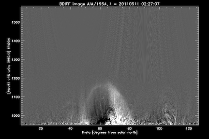
Now that we have created some images, we can create time lapse movies from them, like so:
IDL> movie_types=['run','arun']
;If you want to make all types of movie, use this instead
;movie_types=['araw','abase','arun','raw','base','run']
IDL> for w=0,n_elements(wav)-1 do $
for mt=0,n_elements(movie_types)-1 do $
aia_make_movies, event, movie_type=movie_types[mt], wav=wav[w],/force
We just made a running difference and annulus running difference .mp4 movies for this event. They will be stored in
CORWAV/events/110809_01/movies/. The '$' sign in the IDL code above just allows to break the line without IDL breaking.
Top
6. Measuring EUV wave kinematics.
There are different ways to measure how fast the wave is moving and how much it is accelerating/decelerating as a function of time.
The usual way is to record the pixel values along a single radial line passing through the wave front and through the center of the Sun,
as a function of time. This way, we can measure the evolution of the apparent edge (front) of the wave in the radial direction. The annulus images allow
us to do that, but they also allow us to easily measure the lateral motion of the wave at different heights above the solar limb,
which can give us information about the local plasma properties, as well as the eruptive feature that drives the wave. This is because we can simply
measure the feature move along a row of pixels in the annulus images, which represent a constant height above the solar surface. The CorWav library allows
the user to measure the radial and lateral motions along specific directions (black vertical and horizontal lines), shown in this automatically generated plot
(white line denotes the edge of data):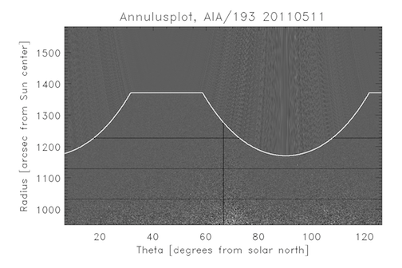
We will start with the radial measurements. The procedure to use is 'aia_annulus_analyze_radial' (interactive):
IDL> rrange=[1.1,1.37] ;The radial range of the annulus to use (Rs)
IDL> for w=0,n_elements(wav)-1 do aia_annulus_analyze_radial,event,wave=wav[w],rrange=rrange,/constrain
The rrange keyword contains the radial range of the annulus image to use, in solar radii. The 'constrain' keyword tells the procedure
to constrain the wave front to behave physically, allowing radial speeds between 10 and 1500 km/s. The procedure is interactive, and
will produce a plot like this: 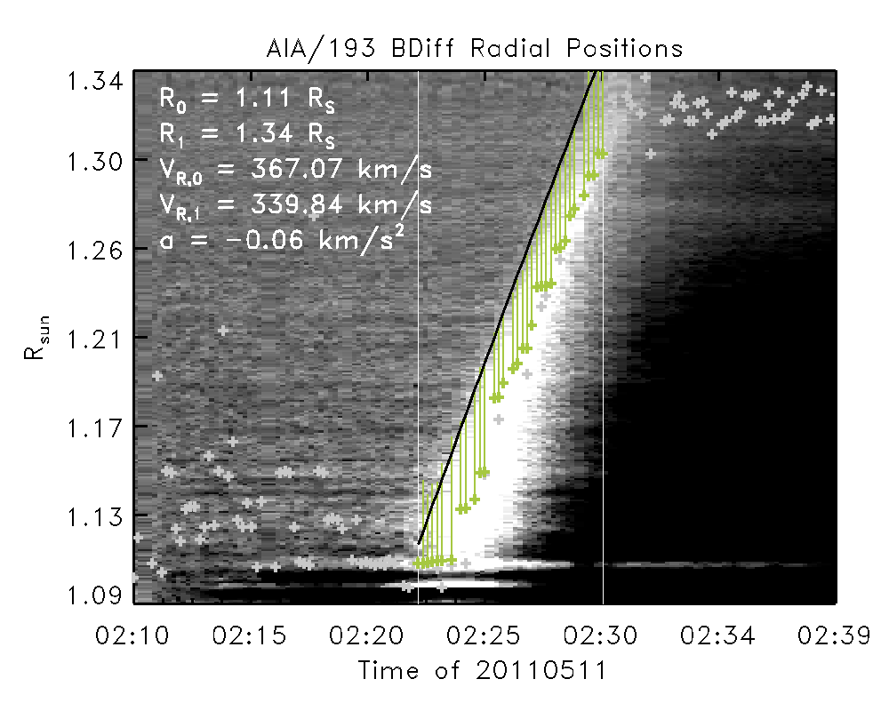
It will be automatically saved as a .png file in the CORWAV/events/110511_01/annulusplot/ folder, together with all the variables in a
.sav file. The black line is a fit to the front of the wave, with the fit parameters written on the plot. The white vertical lines are
the start and end times for fitting the wave front - these must be supplied by the user of the procedure (currently). The underlying
greyscale plot was made by taking one column of the annulus image (centered on the AR position) at every time step, and stacking it next
to the others. This produces a time-height plot, also known as a 'J-map'.
Top
7. Running the DEM, PFSS+CSGS models.
To be able to say more about the likely plasma and magnetic conditions, we need to apply several models, which use as inputs AIA observations
or parameters inferred from these observations. These models are the essence of the analysis, and CorWav provides interfaces to them.
7.1 DEM
The first one is Differential Emission Measure analysis, which allows to use the multi-wavelength observations of AIA
to calculate the amount of emitting material along the observed line of sight - a proxy for the coronal density. Currently, CorWav provides an
interface to the DEM model of Aschwanden et al., 2013. This model
fits a single Gaussian profile to the EUV emission as a function of temperature, and provides, for every pixel and time step, a value of the
Emission Measure (EM) and the temperature of maximum emission (Tmax). This is how the model is run (including the /remove_aec keyword in order to
remove any artefacts from flare exposure corrections):
IDL> aia_cfa_teem_run,event,/remove_aec
This will analyze data for every timestep and the specified field of view, and create a map of EM and Tmax. The individual time maps will be stored in
the CORWAV/events/110511_01/dem/aschwanden/ folder, in PNG and SAV files. Here is the result for a single snapshot of the 110511_01 event:
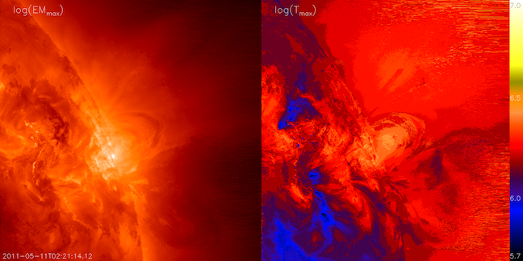
Next, the time series of EM and Tmax for particular regions around the EUV wave sheath can be extracted, assuming the wave kinematics measurements
have been performed.
IDL> aia_dem_define_subrois,event
IDL> aia_aschdem_save_subrois,event
This procedure automatically positions 8 rectangular regions of interest (ROI) tangentially to the shock surface, four along the shock surface for the middle time step,
and four along a radial direction outward from the eruption source, like in the following image. The results are saved in the
CORWAV/events/110511_01/ionization/ folder. The aia_aschdem_save_subrois procedure extracts the DEM results at the previously defined ROIs.
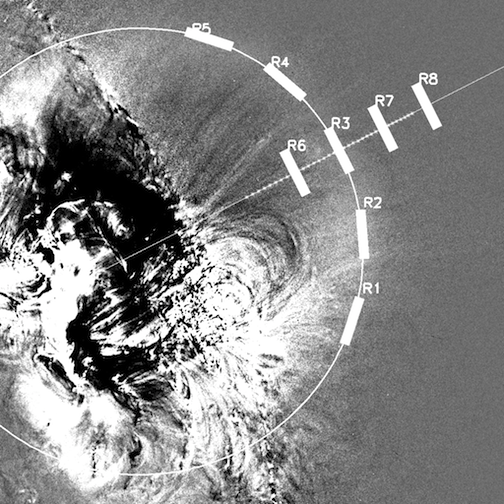
The user can also choose to extract square ROIs interactively, using the aia_dem_define_subrois_manual procedure:
IDL> aia_dem_define_subrois_manual,event,numroi=8,roisize=10
IDL> aia_aschdem_save_subrois,event
where numroi is the number of ROIs to select, and roisize gives the square ROI size, in pixels.
Once the DEM model has been run, and the ROIs have been selected, we can plot time series of EM and Tmax for them, using the aia_dem_analyze procedure:
IDL> trange='2011-05-11T'+['02:15:00','02:31:00']
IDL> aia_aschdem_analyze,event,trange=trange
Running this will produce individual PNG and SAV files for all selected regions in CORWAV/events/110511_01/dem/aschwanden/ with information on the time
evolution of EM and Tmax. Here's a plot for one region for this particular event:
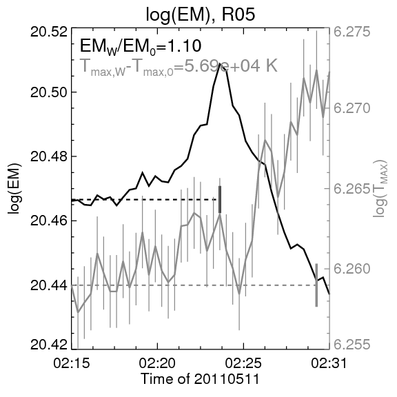
In addition, the user may create plots of the base emission measure base ratios (ratio of each EM image to the pre-event image) like the one below by running:
IDL> aia_aschdem_plot_em_ratios,event
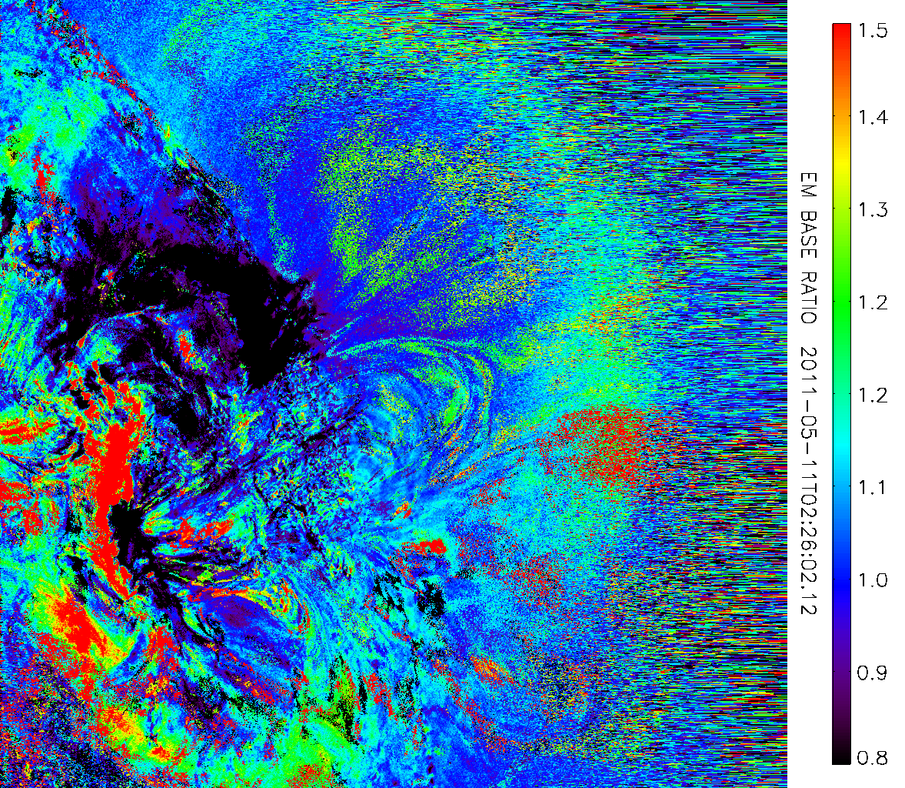
7.2 PFSS+CSGS
To obtain information about how efficient the shock wave may be in accelerating particles to high energies, we combine a 3D static model of the coronal magnetic fields
with a 3D evolving model of the shock surface. The magnetic field model (Schrijver and De Rosa, 2003)
is known as a Potential Field Source Surface (PFSS) model, and is freely available as part of SolarSoft. It is driven by observations of photospheric line-of-sight magnetic fields
over a full solar rotation, and produces extrapolations of that magnetic field in the corona out to ~2.5 solar radii. The CSGS model has been developed specifically for CorWav,
and is part of this library. It uses the kinematic measurements for the wave radial edge positions to create a spheroidal surface, which represents the entire surface of the wave.
Combining the two models allows the estimation of the time-dependent shock-to-field angle values and magnetic coronal connectivity for the shock event.
To apply the PFSS model, we first need to generate an instance of it for the nearest time to the event. This is done with the pfss_return_field procedure:
IDL> pfss_return_field,event.st,/save,path=event.pfsspath,event=event
The result is a large file, which will automatically be saved in CORWAV/events/110511_01/pfss/ folder. Next, run the pfss_shock_run_csgs procedure. It will create the CSGS model,
and combine it with the PFSS model, to produce the positions at which the magnetic field lines cross the shock surface, and the crossing angle values. The results are saved again
in the pfss/ folder.
IDL> pfss_shock_run_csgs,event
The image below illustrates the application of the PFSS+CSGS model. The loopy lines of varying colors represent the modeled coronal magnetic field lines near the time of the event.
The black and green meshed surface is the CSGS model for that time step, and the orange points represent the crossing points. This plot was created by running
IDL> pfss_shock_plot_csgs,event,/png
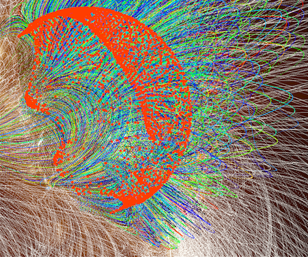
To plot the values of the shock-crossing angle (known as ThetaBN) for all time steps, run pfss_shock_plot_crossing_angles.
It will produce one image for every time of the top-down view of the shock surface with the position of the shock crossings up to that time step (if you specify the /oplot keyword),
and angle value color coded. Without the /oplot keyword, the image will only contain the current crossings positions and angle values.
IDL> pfss_shock_plot_crossing_angles,event(,/oplot)
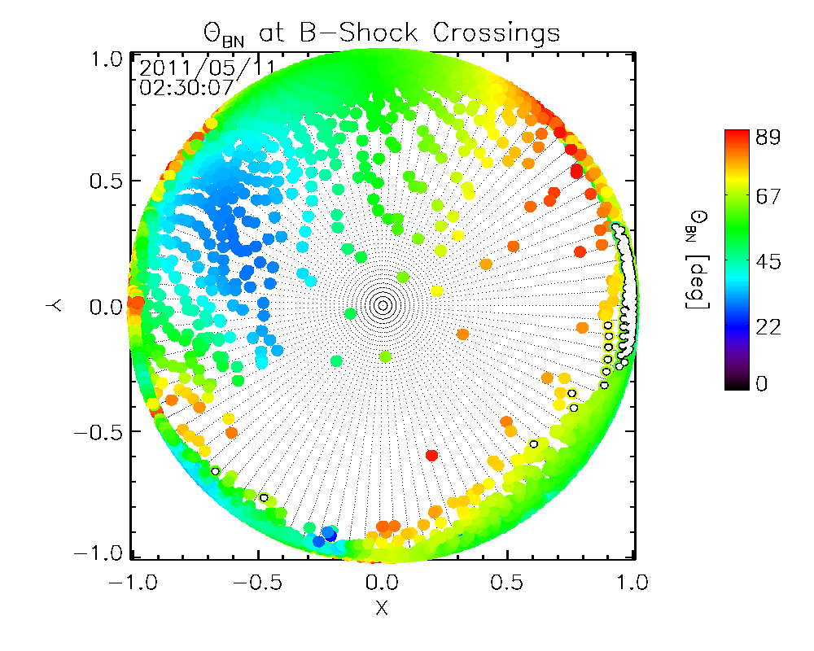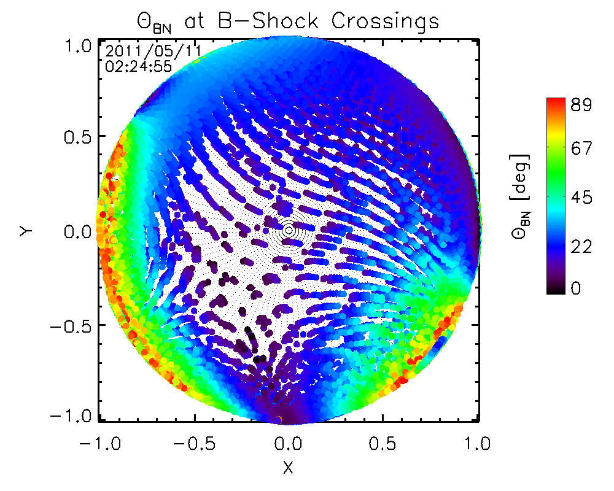
You can obtain some statistics on the ThetaBN values over time and make a plot of them, by running
IDL> pfss_shock_plot_thetabn_stats,event
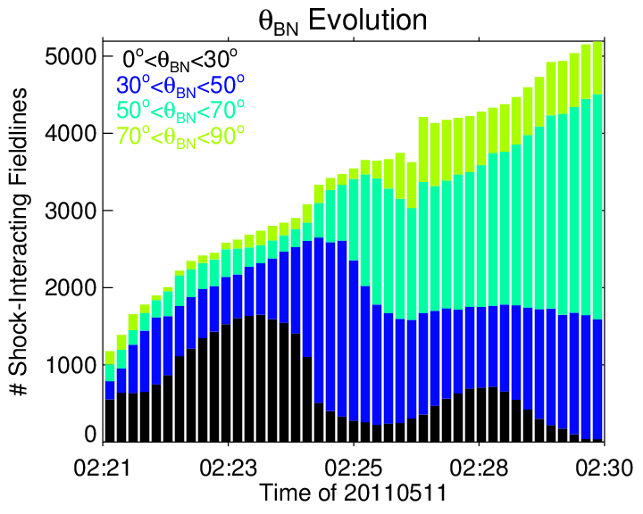
Finally, you can plot the coronal connectivity of the shock (all field lines that interact with the shock) for all time steps, using pfss_shock_plot_angular_influence.
It will produce PFSS images with crossing field lines highlighted, in a face-on view. The images can also be done in a top-down view, if we specify the /topview keyword:
IDL> pfss_shock_plot_angular_influence,event[,/topview]
 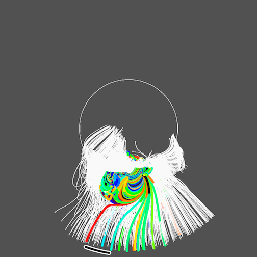
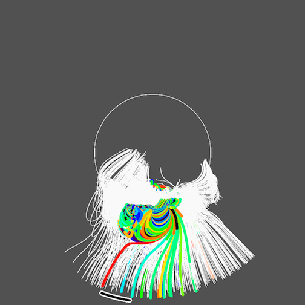
The top view has the advantage that it shows more readily the heliospheric connectivity, as well as the longitudinal range of magnetic field lines, which are nominally connected
to near-Earth space (black arc), for solar wind speeds between 400 and 500 km/s.
All the plots shown in this section are generated automatically, and may be found in the /dem/aschwanden or /pfss/ folders of the respective event.
Top
8. Plotting radio and X-ray data.
CorWav has procedures for plotting radio data from the eCallisto and RSTN catalogs, as well as from Nancay Radio Heliograph, and X-ray imaging data from RHESSI. The radio output files will be stored in the 'radio/' folder of the event(s).
To plot eCallisto data, you first need to download the fits files from the eCallisto website for the dates you are interested in. Then save the data in the appropriate 'Callisto_data' folder, and you can plot them by running
IDL> callisto_plot_spectrum,event[,timerange=timerange,freqrange=freqrange]
To plot data from the Radio Solar Telescope Network (RSTN), first
download daily .srs files from one of the five functioning stations (Learmonth, Palehua, San Vito, and
Sagamore Hill). Alternatively, you can download the daily files automatically using
IDL> rstn_download_data,event
After that, you can run
IDL> rstn_plot_spectrum,event[,full=full,frange=frange,trange=trange,datarange=datarange]
The keywords of this procedure allow to plot the full data file, or choose time and frequency ranges, as well as a scaling of the plotted values. The default time range is set to be the same as the event's.
Top
9. Updating the online database/webpage.
This section describes the process for the local CfA webpage only!
To update the web database page:
Run the procedure sync_event_webfolders to copy/update all data products to the webpage folders.
Run the procedure create_coronalshocks_page to create/update the webpage. The filename to update/create is 'coronalwaves.content'.
Go to the web page main folder($CORWAV_WEB) and run the sync-ing script - ./sync_events
Alternatively, instead of running the first two procedures, you can simply run the update_webpage procedure.
IDL> sync_event_webfolders,event
IDL> webpath=GETENV('CORWAV_WEB')
IDL> fname='coronalwaves.content'
IDL> create_coronalshocks_page,webpath+fname
$> cd $CORWAV_WEB
$CORWAV_WEB$> ./sync_events
Top
10. Other useful procedures.
Run the procedure batch_archive_local_data to archive/update the event data on Backscratch (or wherever you are storing it).
IDL CODE HERE.
Top